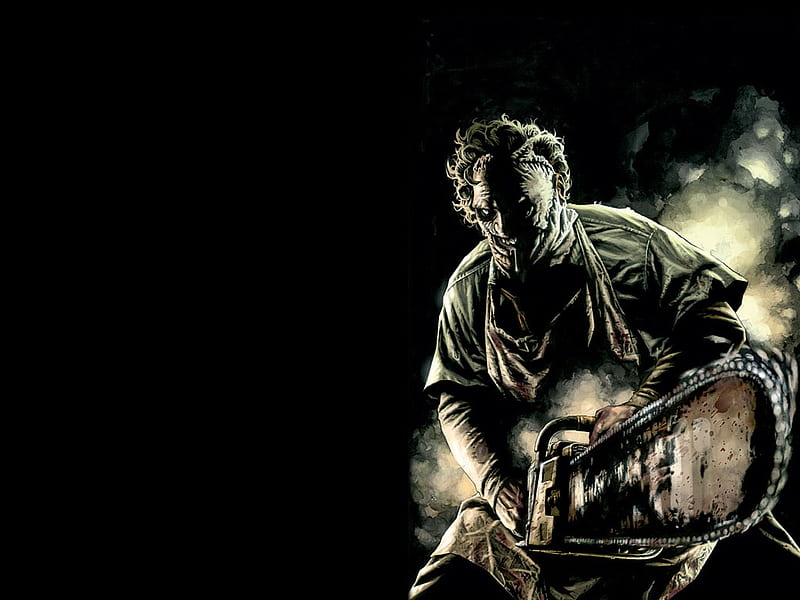

Masacre de Texas

Director: Tobe Hooper Narrador: John Larroquette
Año: 1974 Fotografía: Daniel Pearl
Un grupo de jóvenes se pierde en medio de las desérticas carreteras
de Texas, y termina encontrándose con una familia de matarifes que
los persigue con una sierra mecánica, descuartizándolos uno por uno.
Viernes 13
Director: Sean S. Cunningham Guion: Victor Miller
Año: 1980 Fotografía: Barry Abrams
El campamento de verano del lago Cristal reabre sus puertas tras
permanecer varios años cerrado a raíz de un accidente. A partir de
ese momento, comienza a aparecer gente muerta en extrañas
circunstancias.
Rec
Director: Jaume Balagueró y Paco Plaza Música: Carlos
Ann
Año: 2007 Fotografía: Pablo Rosso
Una reportera y su camarógrafo graban la terrible epidemia de una
enfermedad que transforma a los humanos en caníbales en un edificio
de vecinos que ha sido puesto en cuarentena. Es sólo el comienzo de
una larga pesadilla y de un dramático reportaje único en el mundo.
Scream
Director: Wes Craven Guion: Kevin Williamson
Año: 1996 Música: Marco Beltrami
Un asesino en serie, con máscara y disfraz negro, siembra el pánico
entre los adolescentes de un pueblo californiano. Paralelamente, la
joven Sidney Prescott atraviesa un mal momento: se cumple un año
desde que murió su madre.
Actividad paranormal
Director: Oren Peli Producción: Steven Schneider y
Jason Blum
Año: 2007 Protagonistas: Katie Featherston y
Micah Sloat
Una joven pareja se muda a su primera casa nueva pero son
perturbados por lo que parece ser una presencia sobrenatural que se
vuelve más activa durante la noche.
El conjuro
Director: James Wan Montaje: Kirk M. Morri
Año: 2013 Fotografía John R. Leonetti
Narra los encuentros sobrenaturales que vivió la familia Perron en
su casa de Rhode Island a principios de los 70. Ed y Lorraine
Warren, investigadores de renombre en el mundo de los fenómenos
paranormales, acuden a la llamada de una familia aterrorizada por la
presencia en su granja de un ser maligno.
IT (Eso)
Director: Andrés Muschietti Montaje: Jason Ballantine
Año: 2017 Fotografía: Chung-hoon Chung
Varios niños de una pequeña ciudad del estado de Maine se alían para
combatir a una entidad diabólica que adopta la forma de un payaso y
desde hace mucho tiempo emerge cada 27 años para saciarse de sangre
infantil.
Saw
Director: James Wan Montaje: Kevin Greutert
Año: 2004 Fotografía: David A. Armstrong
Adam y Lawrence se despiertan encadenados en un sucio baño con un
cadáver entre ellos. Su secuestrador es un loco conocido como Jigsaw
cuyo juego consiste en forzar a sus cautivos a herirse a si mismos o
a otros con tal de permanecer vivos.
Chucky

Director: Tom Holland Montaje: Edward Warschilka
Año:1988 Fotografía: Bill Butler
Cuando un niño de seis años de edad asegura que su nuevo muñeco ha
arrojado violentamente por la ventana a su niñera, nadie le cree.
Pero una larga serie de horribles asesinatos conduce al detective
que se ocupa del caso hasta el muñeco.
Annabelle
Director: John R. Leonetti Guion: Gary Dauberman
Año: 2014 Montaje: Tom Elkins
John Form ha encontrado el regalo perfecto para su esposa
embarazada, una muñeca antigua. Una noche aterradora, los miembros
de una secta satánica invaden su hogar y atacan a la pareja. Además
de sembrar el terror y derramar sangre a su paso, invocan a un ente
maligno que provocará desgracias aún mayores y que ha poseído el
cuerpo de... Annabelle.